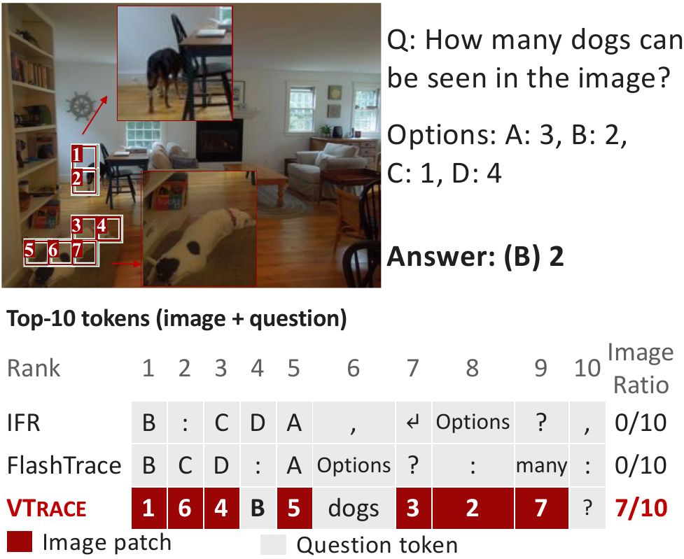
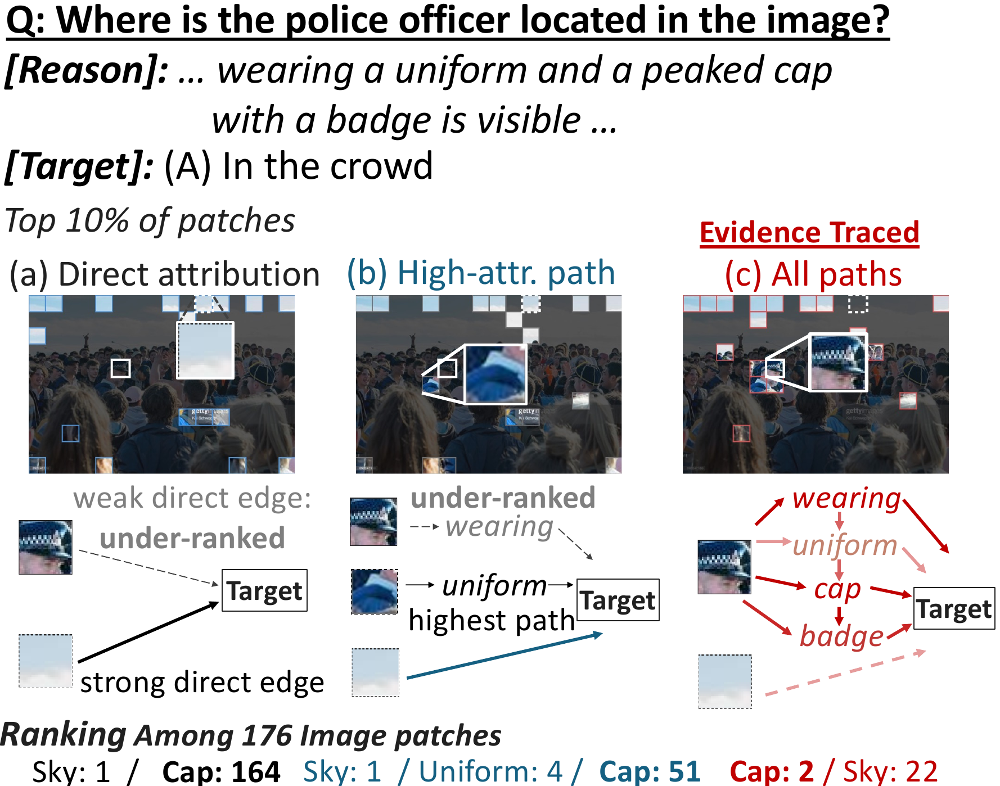
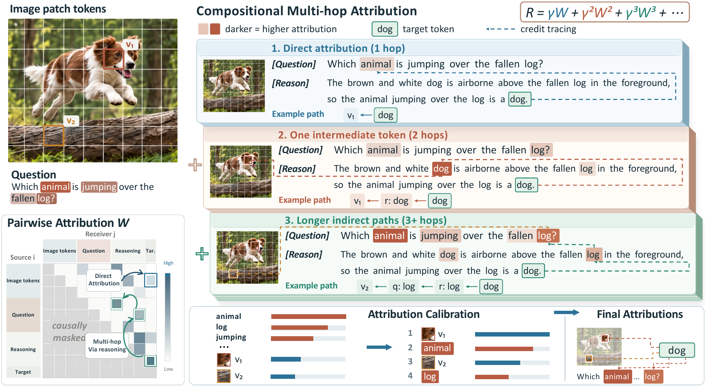
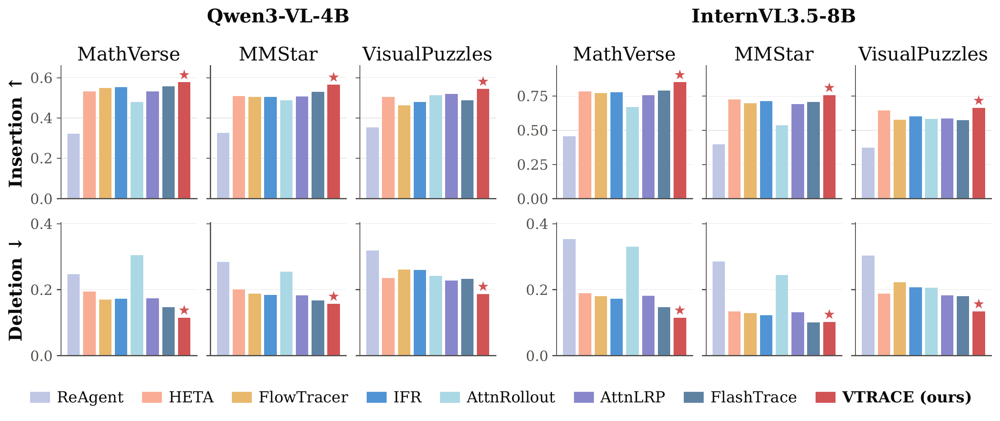

Faithful token attribution explains a large vision-language model's response by ranking image and prompt tokens by how much the model relies on them, so that removing higher-ranked tokens makes the response likelihood drop faster. Existing attribution methods were developed for text-only language models, and in multimodal reasoning they underrepresent visual evidence relative to text and trace only some of the reasoning paths through which the image influences the answer. VTrace builds modality-aware pairwise attributions, aggregates all direct and indirect paths in closed form, and calibrates image and text scores by each modality's measured contribution to the response likelihood, producing one unified ranking of input tokens. Against seven baselines on six visual reasoning benchmarks, it gives the most faithful attributions.
When the model correctly counts two dogs, neither IFR nor FlashTrace puts a single image patch in its top-10 tokens; option letters and punctuation fill the ranking. VTrace brings seven image patches into the top 10.

The officer's cap reaches the answer through tokens such as wearing and badge: direct attribution ranks it 164th of 176 patches, the single strongest path 51st, and summing all paths 2nd.


VTrace proceeds in three stages. It first builds a modality-aware pairwise attribution matrix, scoring each source token by what it writes beyond the average of its own modality, so that image patches and text tokens are each measured against their own kind. It then aggregates every direct and indirect path from a source to the target through the generated reasoning in closed form, R = (I − γŴ)⁻¹ − I, and scores each token by its incoming and outgoing path attribution. Finally it calibrates the total image and text attribution to each modality's measured effect on the response likelihood (an exact two-player Shapley split), which makes image patches and words comparable in one ranking while preserving the order within each modality.
VTrace outperforms all baselines across six benchmarks.

@article{yuan2026vtrace,
title = {Tracing the Evidence: Faithful Token Attribution Through Vision-Language Reasoning},
author = {Yuan, Bowen and Wang, Danny and Qiu, Ruihong and Wang, Zijian and Huang, Zi},
journal = {arXiv preprint arXiv:2609.37656},
year = {2026}
}